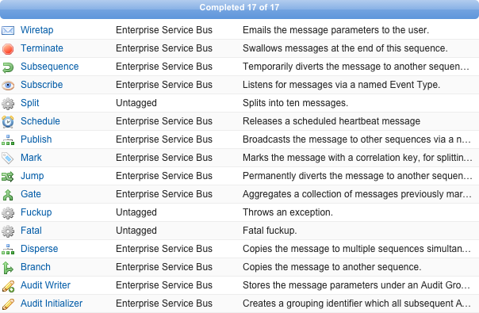

The objective of this tutorial is to discover new processes so they can be referenced by a step in a sequence.
Expected duration: 5 minutes.
Before a Process can be referenced as a step in a sequence, it must first be discovered and registered by the ESB framework. The framework can analyse all Apex logic in the organization to discover classes that conform to a process specification. All valid ESB processes are registered and made available for potential selection by the system orchestrator when building sequences under the tab.
Click the Discover button. This initiates the automated mechanism that finds new processes and refreshes existing ones.
